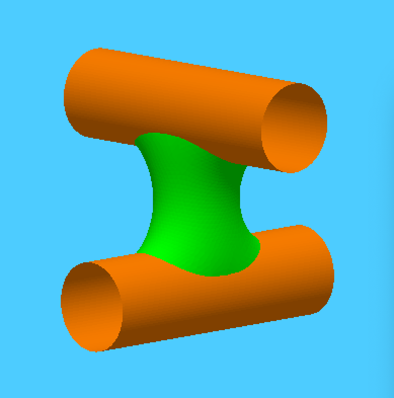
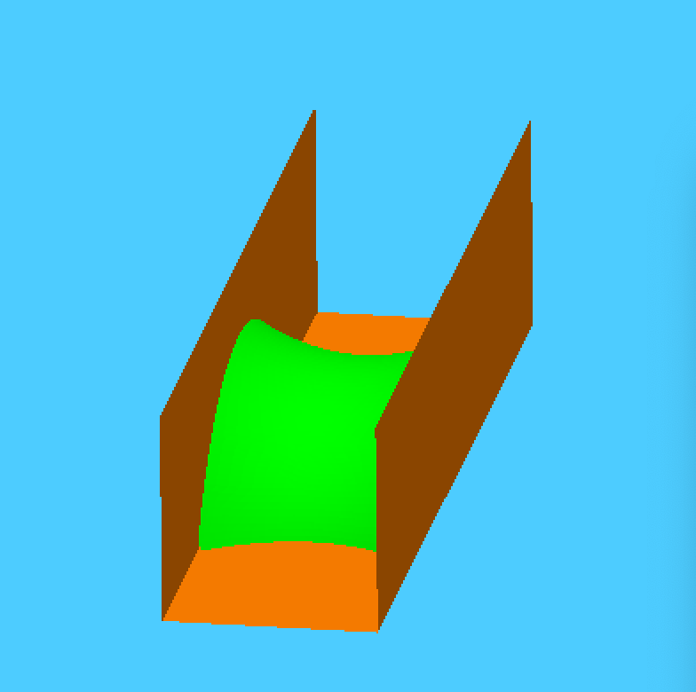
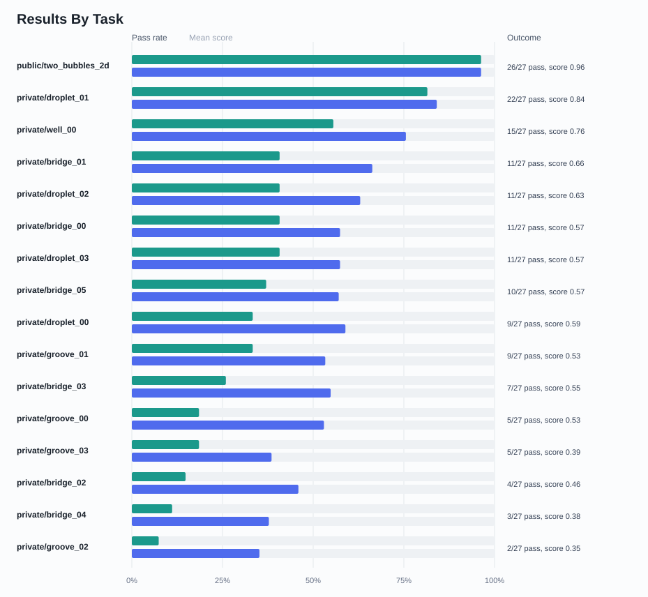
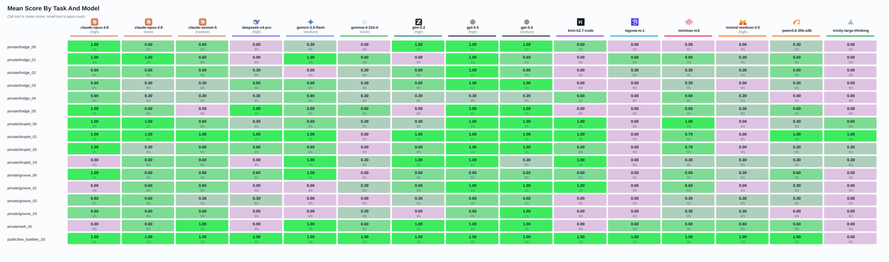

Can models write Surface Evolver files that actually run?
This eval asks language models to produce Surface Evolver datafiles, run simulations, and pass deterministic geometry checks.


Results
What this eval measures
Each task asks a model to write a complete Surface Evolver datafile for a liquid-interface geometry. The answer has to be more than plausible syntax: it must load in Surface Evolver, run through an external command script, and satisfy deterministic geometry checks.
The setup gives models a small tool loop: read curated documentation, run a candidate `.fe` file, inspect feedback, repair the file, and submit the final raw artifact. Scores combine static datafile checks, hidden Evolver execution, and numerical metric checks.


Why another LLM benchmark?
There are already many benchmarks out there, which naturally poses the question of why create another one?
For one, I wanted to write my own. It's well understood that the best way to learn something is by doing, so I wanted to understand what agentic and tool-calling AI actually meant.
Surface Evolver is a tool I used in my grad school days for simulating behavior of liquid-air interfaces. Back then, it was rather tricky getting simulations up and running, taking days or even weeks for the most complex cases. So I naturally wanted to understand how LLMs would fare.
I thought it would be interesting from a pure LLM point of view since:
- Models have seen some Surface Evolver in the training data, but not too much.
- Surface Evolver naturally uses text as its interface.
- The workflow is genuinely agentic: define a datafile, run it, collect feedback, repair it, and try again.
What I learned:
- You often hear "the harness is everything," and this is indeed true. The available tool calls, docs, and feedback loop make a huge difference for performance.
- Todo: keep writing.